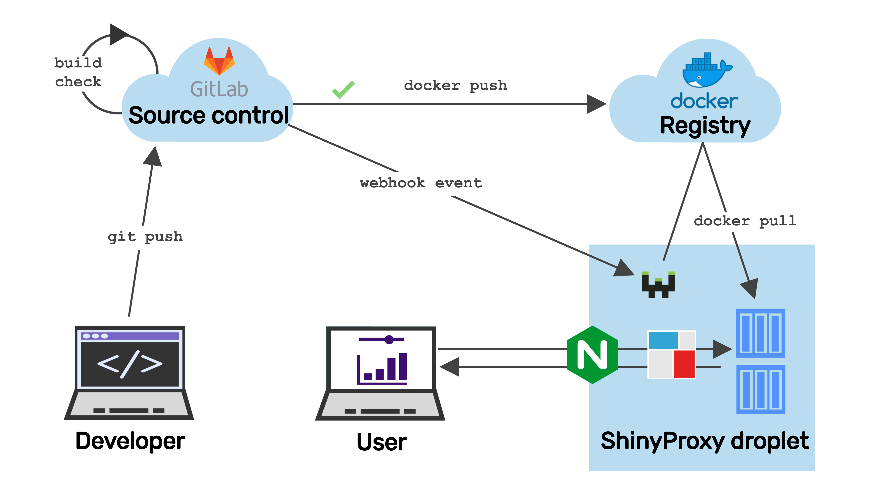

CI/CD with Webhook

This guide explains how to set up webhook for ShinyProxy. We assume ShinyProxy is running on DigitalOcean droplet with Ubuntu 20.04 (LTS).

Port for webhook
UFW is an Uncomplicated Firewall. We enables the UFW firewall to allow only SSH, HTTP and HTTPS. See a detailed tutorial here. Settings we did previously are commented out, uncomment as needed.
Finally, enable these rules by running sudo ufw enable.
Check ufw status.
Install webhook
We are going to use webhook.
The community maintained sudo apt-get install webhook gives a really outdated version.
Therefore we pick the latest (2.7.0) using pre-compiled binary for our
architecture (if in doubt, check dpkg --print-architecture):
Next we will follow this guide
and we move the binary and other files with settings in the /var/www/webhooks directory:
Hook definitions
Create the file hooks.json to store the hook definitions:
The following array of hook definitions goes inside (vim /var/www/webhooks/hooks.json):
Update all images
This array contains 3 hooks. The 1st and the second is
set up to work with GitLab CI/CD pipelines.
See corresponding .gitlab-ci.yml file here (check parts that are commented out in the YAML file).
These need a secret header (value "secret_token_1234")
that is used in the hook definition and in the webhook request. Change to some random
high entropy value.
The 1st hook definition calls the command webhook-pull-all-gitlab without arguments.
The command pulls the latest version of all the docker images that are on the server.
After that, it cleans up the dangling images. So let's put this command into
the /bin folder and make it executable:
This is the content that goes inside the file:
docker login might be needed when using private registries.
GitLab registry
The second hook definition uses the command webhook-pull-one-gitlab which
pulls a single image based on the argument passed.
The content of the file:
Docker Hub
The 3rd hook definition is similar the previous hook in that it also pulls a single docker image. But this one is written for the payload that Docker Hub's webhook delivers (read more here).
The image name and the tag are parsed separately, so the webhook-pull-one-dockerhub
takes these two arguments:
Webhook service
Now create the webhook.service file with the daemon settings via systemctl:
Put these into the service file (vim /etc/systemd/system/webhook.service):
The option -hotreload watches for changes in the hook.json file and reloads them upon change.
Run a few commands with systemctl:
sudo systemctl enable webhook.service to enable the newly created service,
sudo systemctl start webhook.service to start the service.
Now check the service status using sudo service webhook status. If all went well,
you should see something like:
Enabling HTTPS
Add -secure flag to watch over https. This requires also passing the certificate:
check name of certificate and private key in the dir /etc/letsencrypt/live/example.com/,
the add -secure -cert /etc/letsencrypt/live/test.side-r.com/cert.pem -key /etc/letsencrypt/live/test.side-r.com/privkey.pem to the /etc/systemd/system/webhook.service service file.
Use private key (privkey.pem) and fullchain.pem which is concatenation of the public key
(cert.pem) and the certificate chain (chain.pem).
Use crontab -e and add the line 0 2 * * * systemctl restart webhook.service:
we need to restart the webhook daemon regularly (daily in this case)
because it is not updating when the TLS certificate is renewed.
Testing with curl
Test it in -verbose mode: change example.com to your domain.
Have to open up another port, here 9001, because 9000 is taken by the daemon:
/var/www/webhooks/webhook -hooks /var/www/webhooks/hooks.json -hotreload -verbose -secure -cert /etc/letsencrypt/live/test.side-r.com/fullchain.pem -key /etc/letsencrypt/live/test.side-r.com/privkey.pem -port 9001
See more parameter settings here.
Note: we are testing over port 9001, but the real webhook is listening on port 9000.
GitLab
We use curl -i to get the response headers: 200 is what we want. Make sure to use http
protocol (and not https) if SSL certificate is not set up and used.
Using form data (url encoded, default header "Content-Type: application/x-www-form-urlencoded"):
Need to declare content-type header, payload is treated as form data by curl:
Docker Hub
This is how the simplified Docker Hub payload looks like, we can use it to get the image name and the tag:
Set webhook url as https://YOUR_IP_OR_DOMAIN:9000/hooks/pull-one-dockerhub.
Wrapping up
At the end of all this, we have the full CI/CD experience over HTTPS:

Contact us!
Would you like to run your own ShinyProxy server with CICD pipelines? Reach out to Analythium if you need commercial support and consulting services!